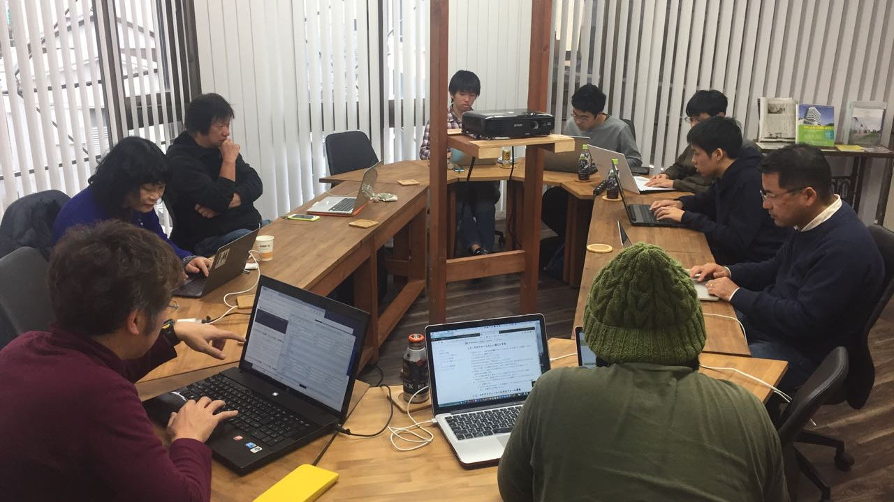
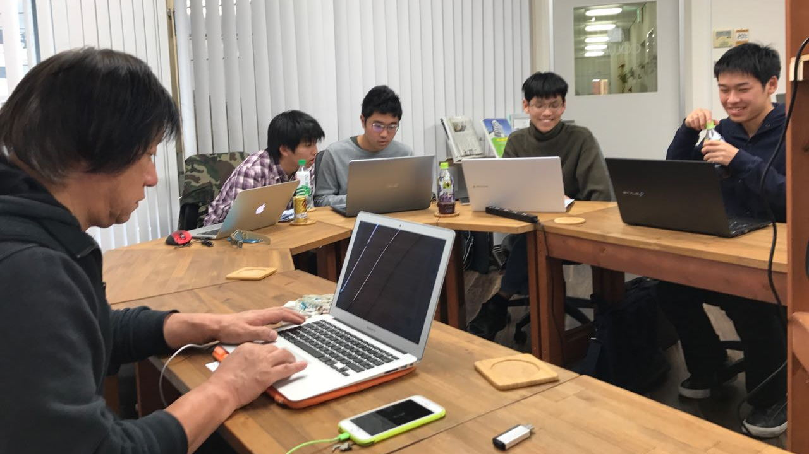
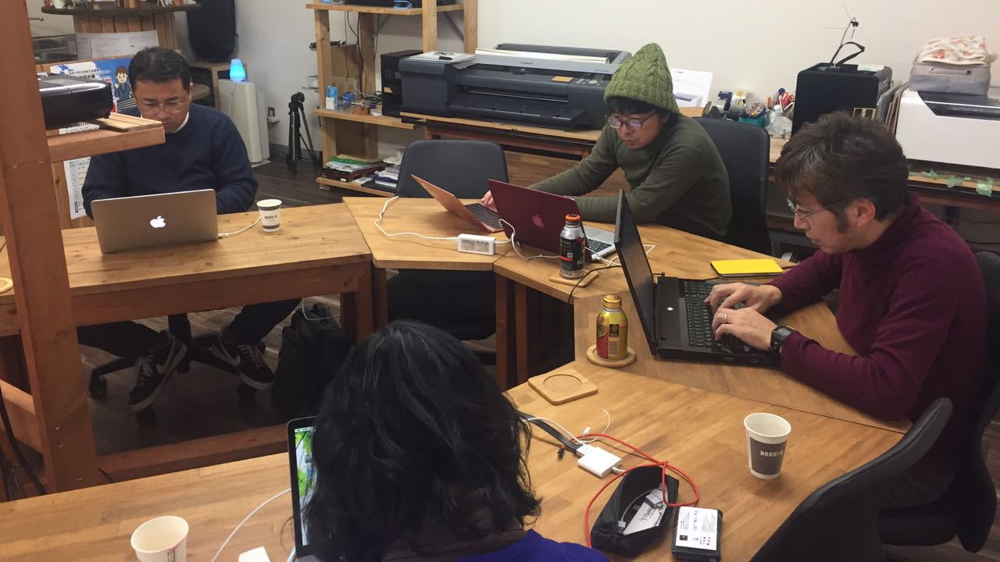

  
- 業務に本格活用できるINTER-Mediatorのフレームワークを知るためのハンズオンを開催します。
- 徳山駅近くのコワーキングスペースで開催します。東京/大阪以外では初めての開催です。
- INTER-Mediatorに馴染みがない方でも、ハンズオンを進めることで、どんなものかを理解いただけます。
| 日時 | 2017/11/25 (土) 14:00 - 17:00 JST |
|---|---|
| 会場 | 山口県周南市コワーキングスペース「カラム」 |
| 参加費 | 無料 |
| 主催 | INTER-Mediator Directive Committee |
| 後援 | 株式会社MIATA |
- 勉強会の翌日にある「OSC広島」にも「INTER-Mediator」として出展します。 こちらの会場へもお越しください。
イベント概要
- INTER-Mediatorはデータベースと連動したWebサイトを構築することができます。
- データベースを用意すれば、HTMLと設定ファイルの記述だけでサイトの骨格が作成できるのがINTER-Mediatorの特徴です。
- HTMLの知識があれば、データベースと連動するWebサイトの多くの部分を開発できるので、 デザインを主業務にしている方や、エンドユーザーの方など、エンジニアでないような方でも、 システム開発に主体的に取り組むことが可能となります。
- 勉強会では、実際に試用環境を利用して、Webサイト構築を行うハンズオンに加え、どんな開発作業が可能なのかなど、 詳細な説明も行います。
| 時刻 | 行事 |
|---|---|
| 14:00 | INTER-Mediatorで作るWebサイト
INTER-Mediatorを利用したWebサイト作成方法を解説します。プレゼン資料
|
| 14:30 | INTER-Mediatorハンズオン
「ハンズオンセッション手順書」に従って、ハンズオンを進めます。
おそらく、セッション1〜2くらいまでを進めますが、他のセッションやサンプルページをご覧になって、
疑問点などにお答えすることも可能です。
|
| 16:00 | なぜ、INTER-Mediatorなのか？
INTER-Mediatorによって変わる開発の流れなどを解説します。
|
プレゼンテーション/ハンズオン進行
新居雅行（にいまさゆき）。フリーランスとして、システム開発、コンサルティング、トレーニングを主業務とする。 iOS、Mac OS X、サーバー、データベース、FileMaker、Webアプリケーションが主なフィールド。 Webアプリケーションフレームワークの「INTER-Mediator」の開発者。 代表的な著作は1990年代の「Macintoshアプリケーションプログラミング」（ディ・アート刊）、 近著に「FileMaker as a Relational Database」（自費出版）などがある。 App Storeの公開初日より「郵便番号検索」をフリーで配布中。 京都工芸繊維大学大学院修了、国立情報学研究所のトップエスイー修了、電気通信大学大学院修了、博士（工学）。 アップル認定トレーナー、アップル認定システムアドミニストレータ、マイクロソフト認定テクノロジースペシャリスト。
参加登録
参加される方へ
- ご自分のMacあるいはPCをお持ちいただき、ハンズオンに参加してください。
- VirtualBoxとINTER-Mediator VMをあらかじめダウンロードしておいていただけるとスムーズです。
- できれば、「バーチャルマシンの利用」をご覧いただき、セットアップを済ませておいてください。